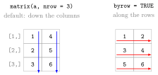

Matrices in R¶
Definition¶
A matrix in R is an atomic vector with a dimension attribute that arranges its elements in rows and columns. Like any atomic vector it holds only one data type.
matrix(data, nrow, ncol, byrow = FALSE) creates a matrix from the vector data. By default the values are filled in column by column: first the first column from top to bottom, then the second column, and so on. With byrow = TRUE they are filled row by row. If only one of nrow and ncol is given, R infers the other from the length of data; a single value fills every cell.
rbind() binds vectors as the rows of a matrix and cbind() binds them as columns. dim() returns the numbers of rows and columns, nrow() and ncol() return them separately, and class() of a matrix is "matrix" "array". Row and column names can be set with rownames() and colnames(). An array generalizes a matrix to more than two dimensions.
Interpretation¶
A matrix is a vector folded into a rectangle. The six numbers of c(1, 2, 3, 4, 5, 6) can become a or a matrix; the dimension attribute says how, and the filling order says which number goes where.

The figure shows Example 1. On the left, the default filling runs down the columns (blue arrows), so the first column is 1 2 3 and the second 4 5 6. On the right, byrow = TRUE runs along the rows (red arrows): the first row is 1 2 and the third row is 5 6. Both matrices have the same three rows and two columns but contain the numbers in different places.
The column-wise default is how R stores every matrix internally: column after column. byrow = TRUE only changes how the input is placed, not how R stores the result. Because a matrix is a vector, it has one type for all cells, and binding a character vector to numbers with cbind() turns every cell into text (type coercion). For tables whose columns have different types, use a data frame.
The rows and columns are numbered like the entries of a matrix in linear algebra, so A[i, j] selects row and column (subsetting by position); matrix algebra such as %*% and t() follows later in the course.
A frequent mistake is forgetting byrow = TRUE when typing a matrix row by row from paper: R then fills the numbers down the columns and the result looks like a rearranged matrix. Printing the matrix once after creating it catches this immediately.
Key Results¶
matrix()fills column by column unlessbyrow = TRUE.- If only
nroworncolis given, the other is the length of the data divided by it; a scalardatafills every cell, and shorter data are recycled. rbind()stacks vectors as rows,cbind()places them side by side as columns, and the object names become row or column names.dim(A)isc(nrow(A), ncol(A));class(A)is"matrix" "array".- A matrix holds one data type; mixing types converts all cells to the most flexible type.
array(data, dim = c(2, 3, 4))creates a three-dimensional array.
Examples¶
1. Column-wise and row-wise filling.
a <- c(1, 2, 3, 4, 5, 6)
matrix(a, nrow = 3, ncol = 2)
#> [,1] [,2]
#> [1,] 1 4
#> [2,] 2 5
#> [3,] 3 6
matrix(a, nrow = 3, byrow = TRUE)
#> [,1] [,2]
#> [1,] 1 2
#> [2,] 3 4
#> [3,] 5 6
In the second call ncol was left out; R inferred ncol = 2 from the six values. The labels [1,] and [,1] are the row and column positions.
2. Binding rows and columns.
d1 <- c(1, 3, 5)
d2 <- c(5, 10, 15)
DR <- rbind(d1, d2)
DR
#> [,1] [,2] [,3]
#> d1 1 3 5
#> d2 5 10 15
DC <- cbind(d1, d2)
DC
#> d1 d2
#> [1,] 1 5
#> [2,] 3 10
#> [3,] 5 15
DC is the transpose of DR: the same numbers with rows and columns swapped.
3. Dimensions, class and names.
dim(DC)
#> [1] 3 2
nrow(DC)
#> [1] 3
ncol(DC)
#> [1] 2
class(DC)
#> [1] "matrix" "array"
rownames(DC) <- c("a", "b", "c")
DC
#> d1 d2
#> a 1 5
#> b 3 10
#> c 5 15
4. Filling with a scalar, and a pitfall.
zeroMat <- matrix(0, nrow = 2, ncol = 2)
zeroMat
#> [,1] [,2]
#> [1,] 0 0
#> [2,] 0 0
matrix(1:5, nrow = 2)
#> [,1] [,2] [,3]
#> [1,] 1 3 5
#> [2,] 2 4 1
#> Warning message:
#> In matrix(1:5, nrow = 2) :
#> data length [5] is not a sub-multiple or multiple of the number of rows [2]
Five values do not fill two complete rows. R rounds the number of columns up to 3, recycles the data to fill the last cell with 1, and only warns.
Prerequisites¶
Related Concepts¶
Sources¶
- Programming for EOR · Week 1
- Lecture script Data Types and Structures (Part 2), part "Matrices & Arrays"; Matrix operations, random numbers and optimisation (Week 5), "Constructing matrices and special matrices" and "Subsetting and combining matrices"
Aliases: matrix(), byrow, rbind(), cbind(), dim(), nrow(), ncol(), array, rownames(), colnames() Keywords: column-wise filling, byrow argument, binding rows and columns, matrix dimensions, arrays
Last updated: 10 November 2026 16:43
Matrices in RMatrix Algebra in RListSubsetting by PositionAtomic VectorVector RecyclingMatrixType CoercionData FrameTranspose